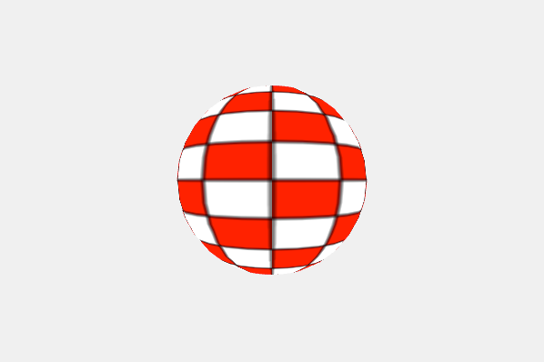

Bouncing 3D Sphere Demo

We can also use the 3D "WebGL" rendering system that is built into p5.js. WebGL, short for Web Graphics Library is is a JavaScript API for rendering interactive 2D and 3D graphics within any compatible web browser. The p5.js has many high-level 3D shapes such as box, cone, cylinder, ellipsoid, plane, sphere, and torus in the WEBGL Library.
Sample Prompt
1. Generate a single file p5.js sketch using WEBGL for a 3D animation.
2. Show a sphere of size 50 that is bouncing around the canvas.
3. Use the ```WEBGL``` as the third parameter of the createCanvas.
4. Cover the sphere with a texture that has grid of white and red squares.
5. Use noStroke() in the texture to not draw the outlines of the grid.
6. Add a drop shadow under the sphere
function setup() {
createCanvas(600, 400, WEBGL);
Sample Response
1 2 3 4 5 6 7 8 9 10 11 12 13 14 15 16 17 18 19 20 21 22 23 24 25 26 27 28 29 30 31 32 33 34 35 36 37 38 39 40 41 42 43 44 45 46 47 48 49 50 51 52 53 54 55 56 57 58 59 60 61 | |
What We Learned
- P5.js has a robust library of 3D animation tools
- We need to specify the WEBGL rendering library when we create the canvas
- Rendering is very fast and smooth if your computer supports the WebGL API standards
- P5.js has a library for generating 3D shapes such as cone, cube and sphere
- You can pass a function to the shape that indicates what pattern (texture) to use on the shape
- P5.js has a function that builds textures
- You just need to generate a 2D pattern to use that texture.
Extending the Lesson
- Add a drop shadow to the ball
- Place axis lines in the background
- Add a slider to control the speed and size of the sphere
Sample Lesson Plan
Objective
- Understand the basics of 3D rendering using p5.js.
- Learn how to manipulate 3D objects and apply textures.
- Develop skills in JavaScript and graphics programming.
Duration
1 hour
Materials Needed
- Computers with internet access.
- Code editor (like p5.js Web Editor).
- Projector for demonstrations.
Lesson Outline
1. Introduction to p5.js and 3D Graphics (15 minutes)
- Brief overview of p5.js and its capabilities.
- Introduction to the concept of 3D graphics.
- Discuss the
WEBGLrenderer in p5.js.
2. Basic 3D Shapes and Transformations (10 minutes)
- Demonstrate how to create basic 3D shapes (e.g., sphere).
- Explain translation and rotation in a 3D space.
3. Hands-on Coding: Bouncing Sphere (15 minutes)
- Students will follow along to create a basic 3D sketch with a bouncing sphere.
- Explain the concepts of
setup()anddraw()functions. - Discuss coordinate systems and movement in 3D space.
4. Adding Texture to the Sphere (10 minutes)
- Introduce the concept of textures in 3D.
- Guide students to modify their sketch to apply a grid texture to the sphere.
5. Customization and Experimentation (5 minutes)
- Encourage students to modify the speed, size, and texture of the sphere.
- Discuss how these changes affect the animation.
6. Q&A and Discussion (5 minutes)
- Open the floor for questions.
- Discuss potential applications of what they've learned.
Assessment
- Observe student engagement and understanding during the hands-on coding session.
- Review the modifications students make to their sketches for creativity and understanding.
Follow-Up Activities
- Assign a project where students create their own 3D animation using p5.js.
- Encourage students to explore more complex shapes and textures.
Draw Shadow
1 2 3 4 5 6 7 8 9 10 | |